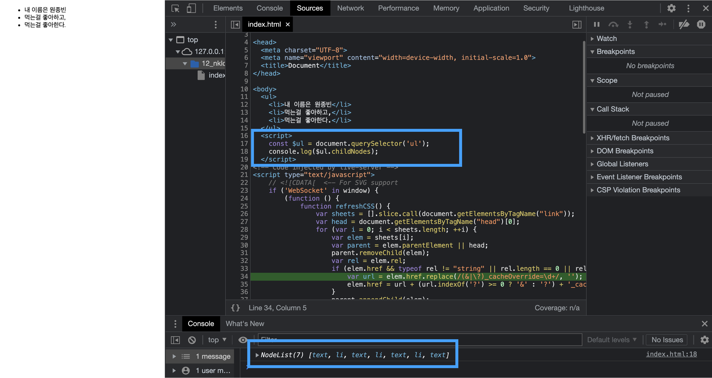
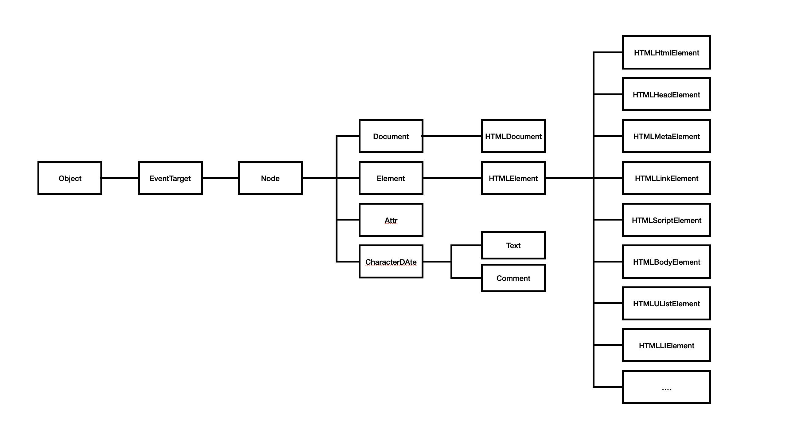

DOM

위 사진처럼 이전에 자바스크립트 코드를 작성하면서 DOM 노드를 탐색하는 경우가 있었는데 childNodes와 인덱스를 이용해서 접근하려고 했을 때 이상한 값이 출력되는 것을 목격한 적이 있다(분명 ul요소 아래에 li요소는 세개인데…?). 그래서 다른 방법으로 children 메서드를 사용했었는데 현재 자바스크립트를 공부하면서 이유를 알게 되었다. 그래서 DOM과 노드를 탐색하는 메서드들에 대해서 정리하려고 한다.
DOM
DOM이란, HTML 문서의 계층적 구조와 정보를 표햔하며 이를 제어할 수 있는 API, 즉 프로퍼티와 메서드를 제공하는 트리 자료구조이다.
1. 노드
HTML요소는 렌더링 엔진에 의해 파싱되어 DOM을 구성하는 요소 노드 객체로 변환되는데 어트리뷰트는 어트리뷰트 노드, 텍스트 콘텐츠는 텍스트 노드로 변환된다. 또한 중첩이 가능하기 때문에 요소노드객체 하위에는 다른 요소 노드 객체가 자식으로 올 수 있다.
이렇게 노드 요소 객체로 구성된 트리 자료 구조를 DOM(Document Object Model)이라고 한다.
노드 객체 타입
대표적인 노드 객체 타입은 다음과 같고, 총 12개의 노드 객체 타입이 존재한다.
| 타입 | 설명 |
|---|---|
| 문서노드 | DOM의 최상위에 존재하는 루트 노드(document 객체) |
| 요소노드 | HTML 요소를 가르키는 객체 |
| 어트리뷰트 노드 | HTML 요소의 어트리뷰트를 가르키는 객체, 부모 요소가 없고, 요소 노드의 형제 요소도 아님 |
| 텍스트 노드 | HTML 요소의 텍스트를 가르키는 객체, 요소 노드의 자식이고, 자식을 가질 수 없는 리프 노드 |
| Comment 노드 | 주석을 위한 노드 |
| DocumentType 노드 | DOCTYPE을 위한 노드 |
| DocumentFragment 노드 | 복수의 노드를 생성하여 추가할 때 사용 |
노드 객체의 상속 구조
노드 객체의 상속 구조는 다음과 같다.

모든 객체는 Object, EventTarget, Node 인터페이스를 상속받는다. 프로토타입과 동일하게 기능들을 상속받게 된다. 따라서 노드에 따라 공통으로 가지고 있는 기능도 있고, 고유한 기능도 있다.
노드 타입에 따라 필요한 기능을 프로퍼티와 메서드의 집합인 DOM API로 제공하는데 이 DOM API를 이용해서 HTML 구조나 내용 또는 스타일들을 동적으로 조작할 수 있다.
2. 요소 노드에 접근하는 방법
1. getElementById
→ Document.prototype.getElementById
const elem = document.getElementById('id');
- HTML의 어트리뷰트로 지정한 id를 가진 요소 노드를 탐색하여 반환.
- id값은 HTML문서 내 유일한 값이어야 한다.
- 동일한 id를 가지는 요소 중(동일한 id가 여러개여도 에러는 발생하지 않기 때문) 첫번째 요소를 반환.
2. getElementsByTagName
→ Document.prototype/Element.prototype.getElementsByTagName
const elem = document.getElementByTagName('h1');
- 인수로 전달한 태그 이름을 갖는 모든 요소를 탐색하여 반환.
- HTMLCollection 객체에 담아 반환.
- 모든 요소를 취득하려면 *을 인수로 전달한다.
3. getElementsByClassName
→ Document.prototype/Element.prototype.getElementsByClassName
const elem = document.getElementByClassName('jongbin');
- 인수로 전달한 클래스를 가지는 모든 요소를 탐색하여 반환.
- HTMLCollection 객체에 담아 반환.
4. querySelector
→ Document.prototype/Element.prototype.querySelector
const elem = document.querySelector('.jongbin');
- 인수로 전달한 CSS 선택자를 만족시키는 하나의 요소 노드를 탐색하여 반환.
- 만족하는 요소가 없는 경우
null을 반환. - 인수로 전달한 CSS 선택자가 문법에 맞지 않는 경우 DOMException 에러가 발생.
- 여러개의 요소를 선택하려면 querySelectorAll 메서드를 사용한다.(NodeList 객체로 반환)
- 다른 메서드들보다 느리지만 구체적인 조건을 사용해서 접근할 수 있다.
- HTMLCollection
노드 객체의 상태 변화를 실시간으로 반영하는(live) DOM 컬렉션 객체- NodeList
실시간으로 노드객체의 상태 변경을 반영하지 않는(non-live) 객체
HTMLCollection과 NodeList는 유사 배열 객체이면서 이터러블이다.
3. 노드 탐색
요소를 기준으로 부모, 자식, 형제 요소를 탐색할 수 있다.
자식 노드 탐색
childNodes
→ Node.prototype.childNodes
- 자식 노드를 모두 탐색해서 DOM 컬렉션 객체 NodeList에 담아 반환.
- 반환한 NodeList 객체에는 요소노드만 존재하는 것이 아니고 텍스트 노드(공백 텍스트 노드)가 포함되어 있을 수 있다.
children
→ Element.prototype.children
- 자식 노드들 중에서 요소 노드만 모두 탐색하여 HTMLCollection에 담아 반환
firstChild
→ Node.prototype.firstChild
- 첫번째 자식 노드를 반환 (텍스트 노드, 요소노드)
firstElementChild
→ Element.prototype.firstElementChild
- 첫번째 요소 노드를 반환
lastChild
→ Node.prototype.lastChild
- 마지막 자식 노드를 반환 (텍스트 노드, 요소노드)
lastElementChild
→ Element.prototype.lastElementChild
- 마지막 요소 노드를 반환
부모노드
parentNode
→ Node.prototype.parentNode
- 요소의 부모요소를 반환.
- document의 parentNode는
null
형제 노드 탐색
- 찾으려는 형제 요소가 없으면 null을 반환
previousSibling
→ Node.prototype.previousSibling
- 자신의 이전 형제 노드를 반환 (텍스트 노드, 요소노드)
previousElementSibling
→ Element.prototype.previousElementSibling
- 자신의 이전 형제 요소 노드를 반환
nextSibling
→ Node.prototype.nextSibling
- 자신의 다음 형제 노드를 반환 (텍스트 노드, 요소노드)
nextElementSibling
→ Element.prototype.nextElementSibling
- 자신의 다음 형제 요소 노드를 반환
처음에 언급했던 childNodes를 사용해서 특정 요소에 접근할때 이상한 값이 나오는 이유를 알게 되었다. childNodes는 NodeList 객체에 요소들을 담아서 반환하는데 이때 반환된 NodeList에는 요소 노드만 존재하는 것이 아니고 텍스트 노드도 존재하기 때문에 내가 의도한대로 출력이 되지 않았었다. children 메서드를 사용했을때 정상적으로 동작한 이유는 children 프로퍼티로 접근했을 경우에는 HTMLCollection에 요소 노드만 담아 반환해주기 때문에 인덱스로 접근했을때 원하는 결과를 도출할 수 있었다. 모르고 사용했을때와 알고 사용했을때의 차이는 크다고 생각한다. 왜 그렇게 동작하는지 명확하게 알고 이해하는 것이 중요함을 다시 한번 느낄 수 있었다.